Ichihara, Chiba: things to do, food and stays
Ichihara · Chiba
Ichihara
Highlighted on the Chiba map.
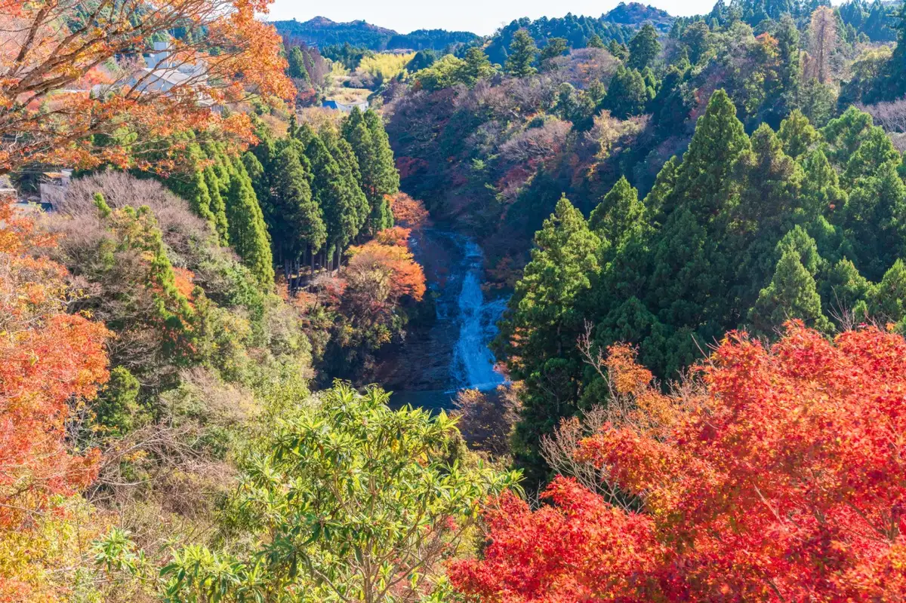
Stay
五井グランドホテル
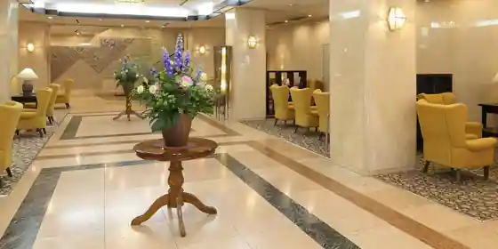
Goi Grand Hotel
Hotel in Goi, Ichihara with parking.
天然温泉 「旅人の湯」 ホテルルートイン市原
Tennen Onsen (Tabibito No Yu) Hotel Route Inn Ichihara
Hotel in Goi, Ichihara with a large communal bath; 4-minute drive from Goi Station.
COCO VILLA 養老渓谷
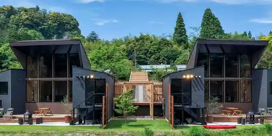
COCO VILLA Yoro Keikoku
Inn in Kunimoto, Ichihara with riverside setting.
ビジネスホテル五井ヒルズ 五井駅前
Business Hotel Goi Hiruzu Goi Ekimae
Hotel in Goichuohigashi, Ichihara with buffet meals and breakfast available.
ホテルクラウンヒルズ五井（2025年5月新築オープン）
Hotel Kuraunhiruzu Goi (2025 Nen 5 Gatsu Shinchiku Opun)
Hotel in Goichuohigashi, Ichihara with parking and a large communal bath.
五井キャピタルホテル
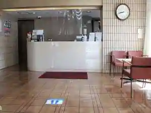
Goi Kyapitaru Hotel
Hotel in Goichuonishi, Ichihara; 1-minute walk from Goi Station.
市原イン ソーシャル五井
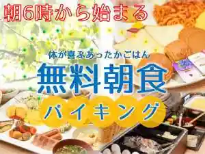
Ichihara Inn Sosharu Goi
Inn in Goichuonishi, Ichihara with buffet meals and breakfast available.
市原マリンホテル
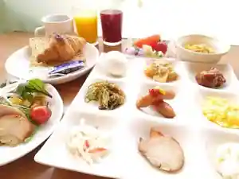
Ichihara Marin Hotel
Hotel in Goichuonishi, Ichihara with business travelers.
ホスピタリティイン八幡宿駅前（ＢＢＨホテルグループ）
Hosupitaritein Hachiman Shukueki Mae (BBH Hotel Gurupu)
Hotel in Hachiman, Ichihara with buffet meals and breakfast available; 3-minute walk from Hachimanyado Station.
ビジネスホテル五井温泉
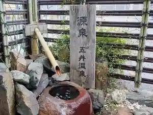
Business Hotel Goi Onsen
Hotel at Suhotelgoi Onsen in Goi, Ichihara with business travelers.
天然温泉 ホテルルートイン市原
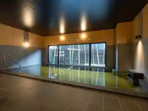
Tennen Onsen Hotel Route Inn Ichihara
Hotel in Goi, Ichihara with a large communal bath.
ホテル市原クラブ八幡北町店
Hotel Ichihara Kurabu Hachiman Kitamachi
Hotel in Hachimankita, Ichihara with long stays.
Dining
ラーメン濱野家
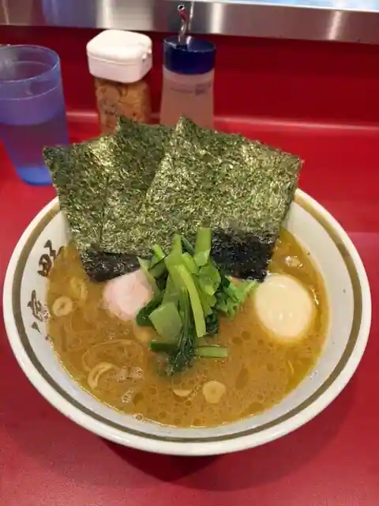
Ramen Hamano Ie
ちばから 市原本店
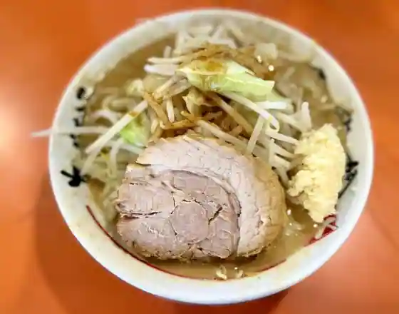
Chibakara Ichihara Hon
横浜家系らーめん ぼうそう家
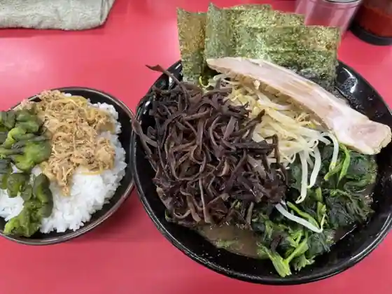
Yokohama Kakei Ramen Boso Ie
ラーメン 天一
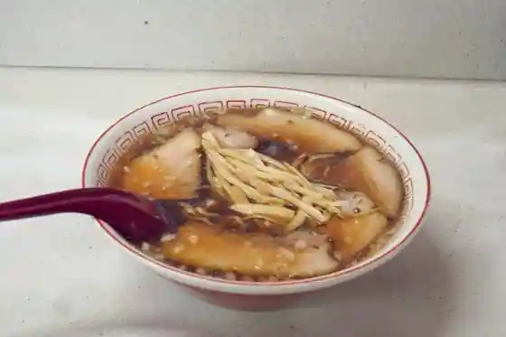
Ramen Ten'Ichi
蔵精
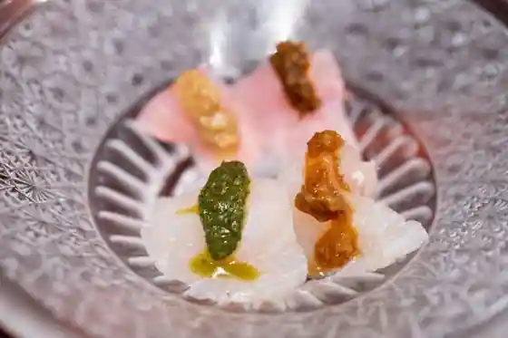
Kura Sei
うるいど八幡屋
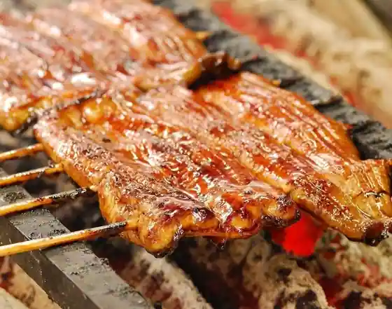
Uruido Hachiman Ya
らぁ麺 ひなた
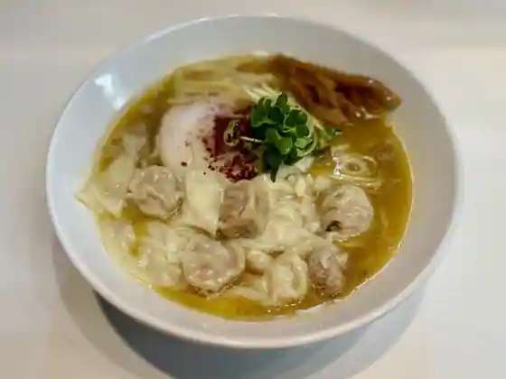
Ra Men Hinata
PIZZERIA BOSSO 市原店
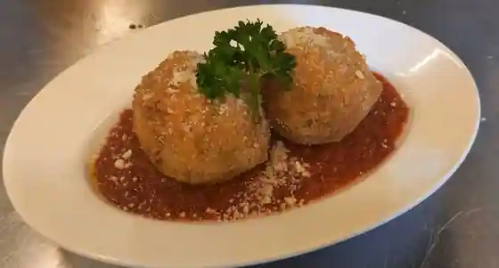
PIZZERIA BOSSO Ichihara
麺の輪
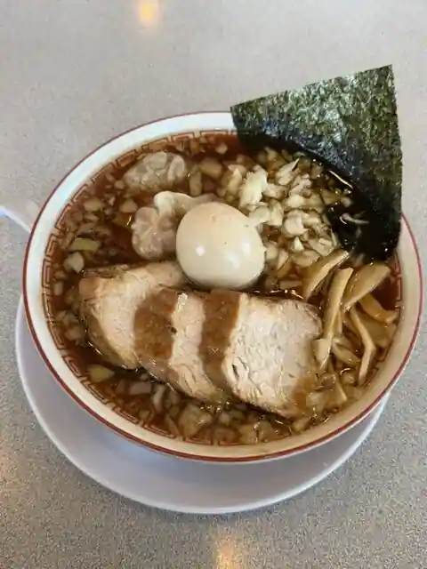
Men No Wa
光の葉
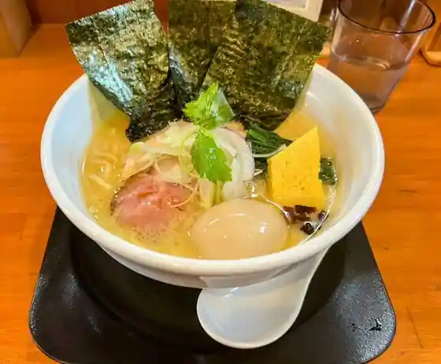
Hikari No Ha
家系ラーメン 上総家
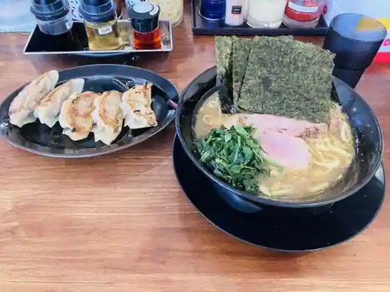
Kakei Ramen Kazusa Ie
MENYA HITENZAKA
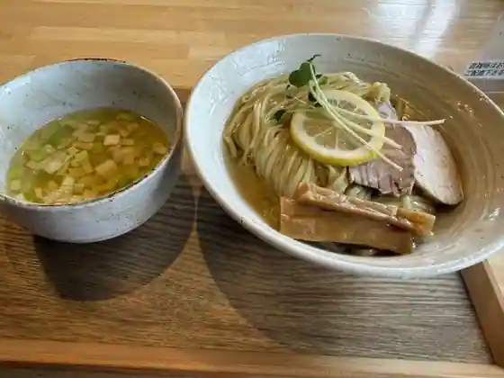
MENYA HITENZAKA
ホルモン焼 玉屋
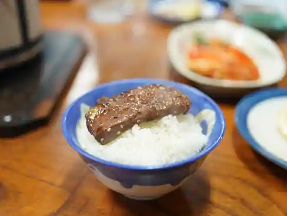
Horumon Yaki Tamaya
NOODLE・SP・CRAFT
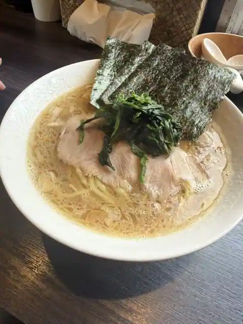
NOODLE SP CRAFT
炭火焼きステーキ灰屋
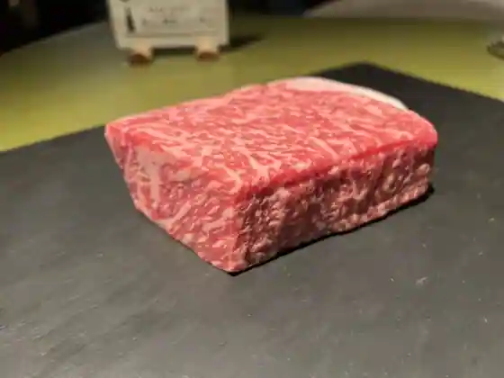
Sumibi Yaki Steak Haiya
ジャパニーズソバヌードルズ サソリ
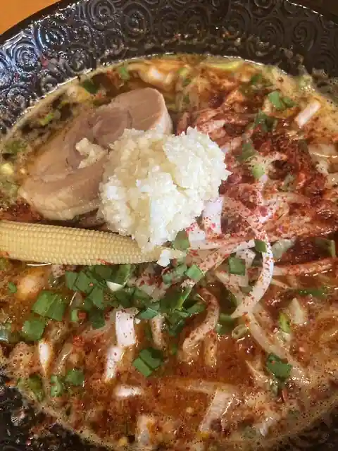
Japanizusobanudoruzu Sasori
ラーメンショップ○化 市原山木店
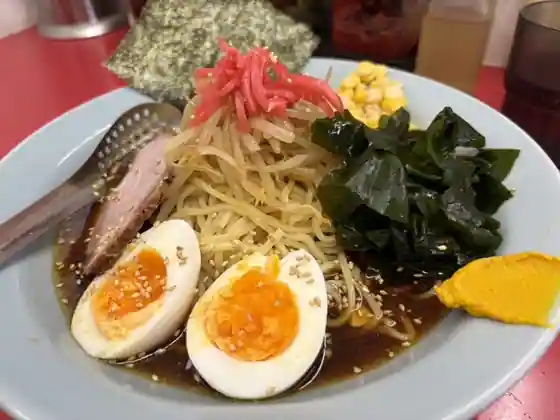
Ramen Shoppu Ka Ichihara Yamaki
田中屋レストラン
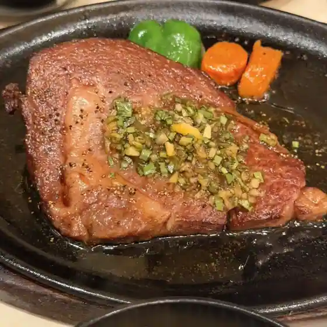
Tanaka Ya Restaurant
中華レストラン紅鷹
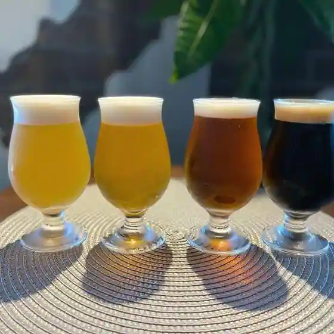
Chuka Restaurant Kurenai Taka
十割そば 月 市原店
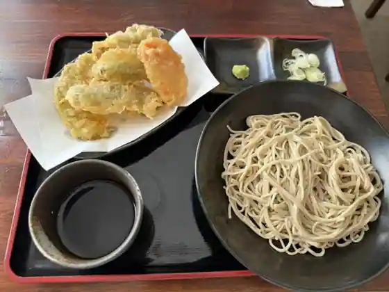
Ju Wari Soba Gatsu Ichihara
ラーメン いしい 市原店
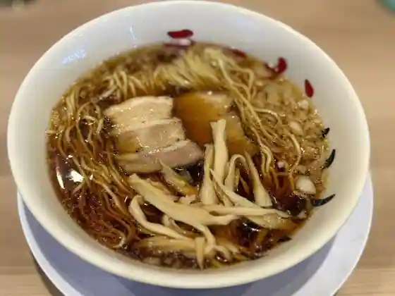
Ramen Ishi Ichihara
かま屋
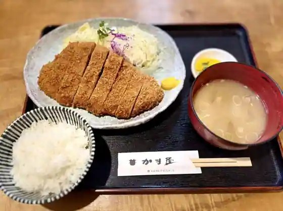
Kama Ya
フライデイ
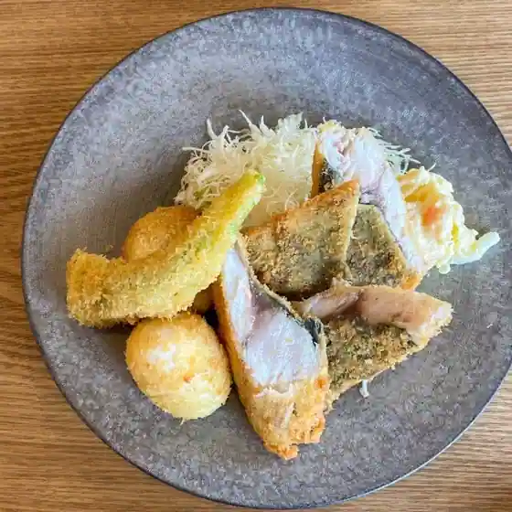
Furaidei
こみなと待合室
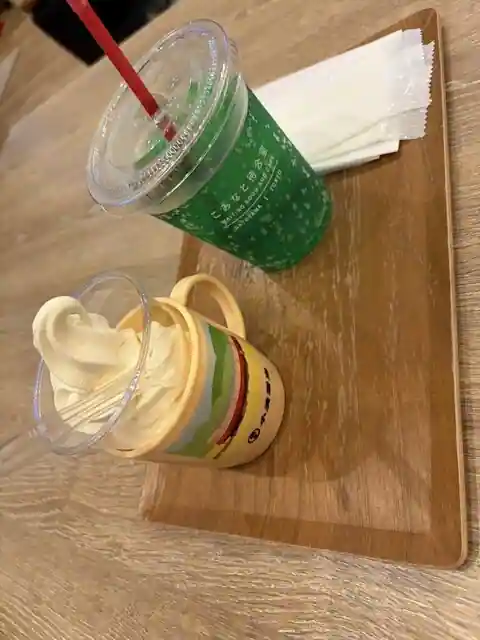
Kominato Machiaishitsu
Sights
Yoro Gorge
Kominatotetsudo
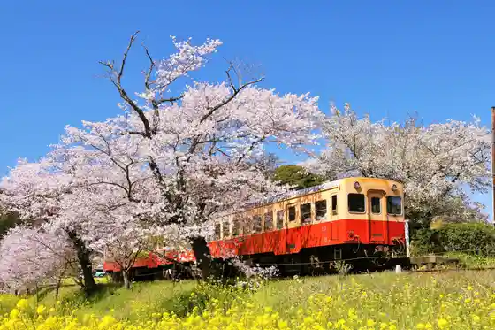
Chibaniambijita Center
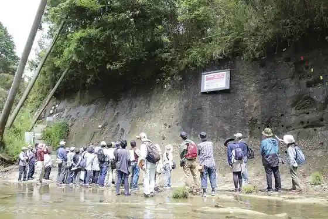
Chiba Kodomo no Kuni Kizzu Dam
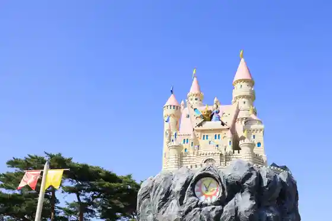
Iigaoka Hachiman Shrine
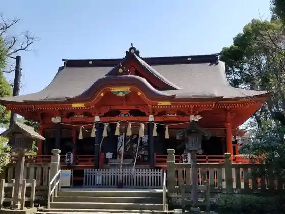
Nagae Dam
Orijinarumeka Umi Zuri Park
Boso Satoyama Torokko Resshaunko / Kominatotetsudo Goi Eki Kazusa Ushiku Eki Yoro Keikoku Eki
ANIMAL WONDER REZOURT Ichihara Zo no Kuni
Ichihara Lakeside Art Museum
Ichihara Mitsubachi Ranch
Roadside Station Azu no Sato Ichihara
Ichihara Kuodo Forest
Yoro Keikoku Kawa no Eki Ayu Village
Yoro Kawa Rinkai Park
Kominatotetsudo Tsukisaki Eki
The Bamboo Forest
Boso Juji Sono
Toilet in Nature/ Meshi Kyu Eki
Kazusa Sarashina Park
Ichihara History Museum
Ichihara Bunka Forest
Kominatotetsudo Kazusa Kubo Eki
Shrine
Ichihara Suiko Kumiai
Kominatotetsudo Satomi Eki
Furusato Farm
Nishi Gan Tera
Ichihara Satoyama Farm
Hoshino Farm
Kisetsu no Hana (Hanashobu) / Ichihara Kuodo Forest